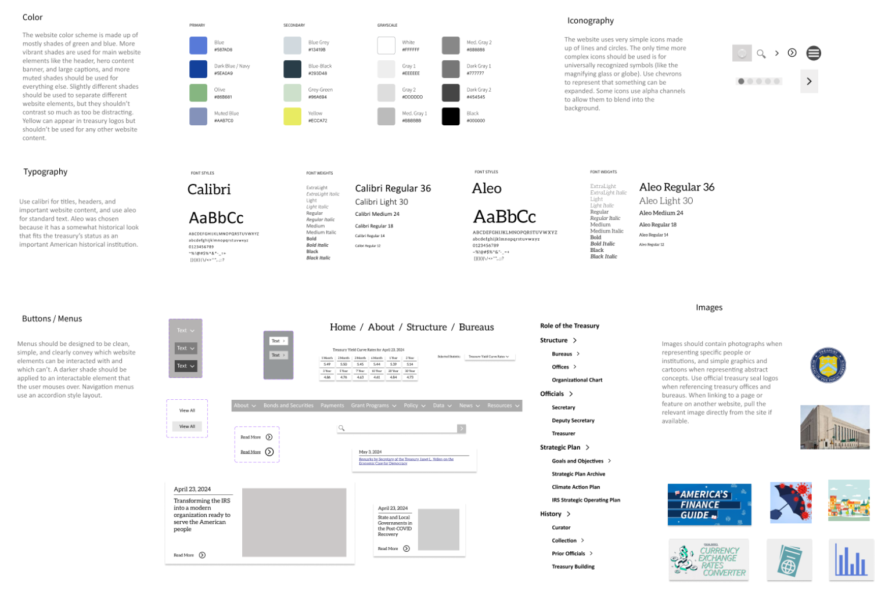
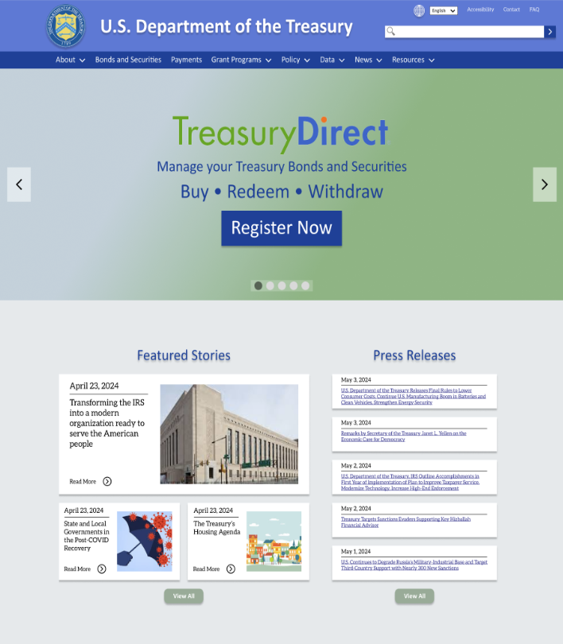
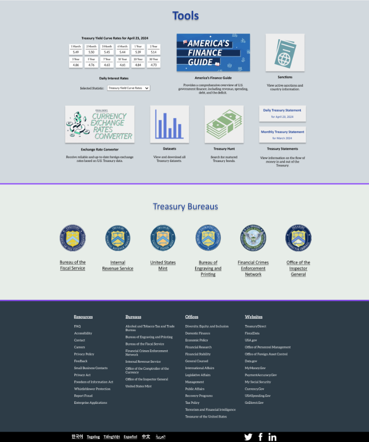
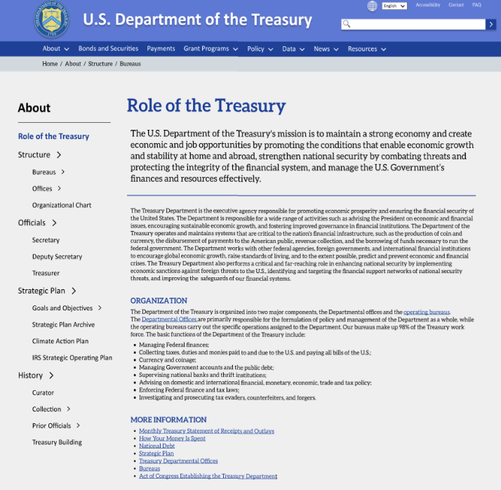
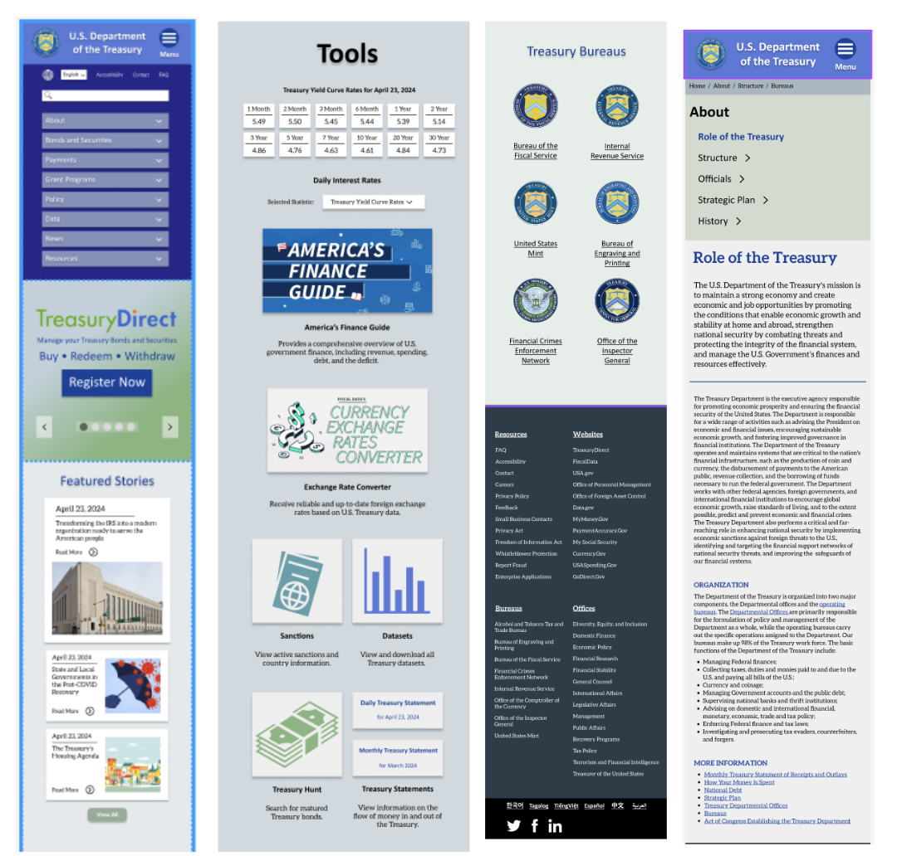

Style Guide
For the style of the prototype, I wanted to create a clean, undistracting look, but with a touch of old-timeiness to emphasize the Treasury's role as an important historical institution.
Prototype
   Final Thoughts
• A primary challenge in government website UI design is organizing the huge scope of content and information in an intuitive way
• User Testing should occur at an early stage of the process, I waited too long to have a “refined” prototype to begin testing
• Minimalism is frequently the best decision, extra layers of complexity should be justified before being added
• Good design is a lengthy process and can’t be rushed